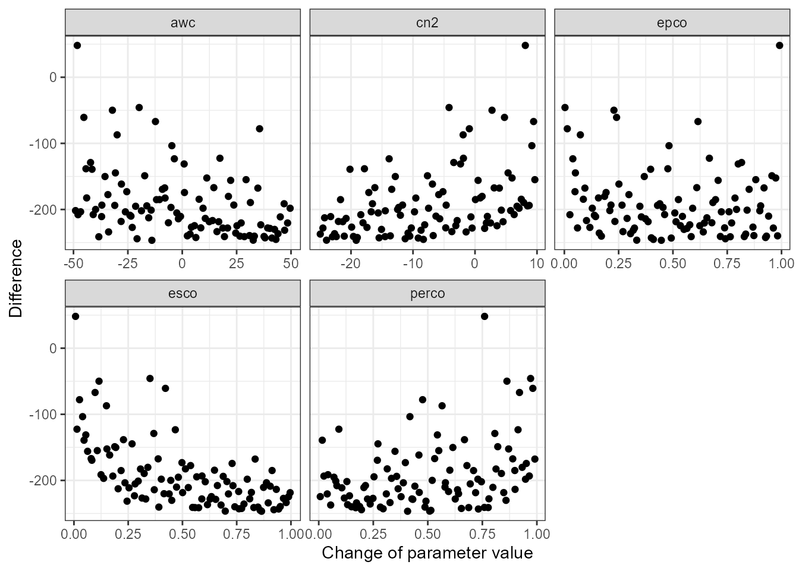
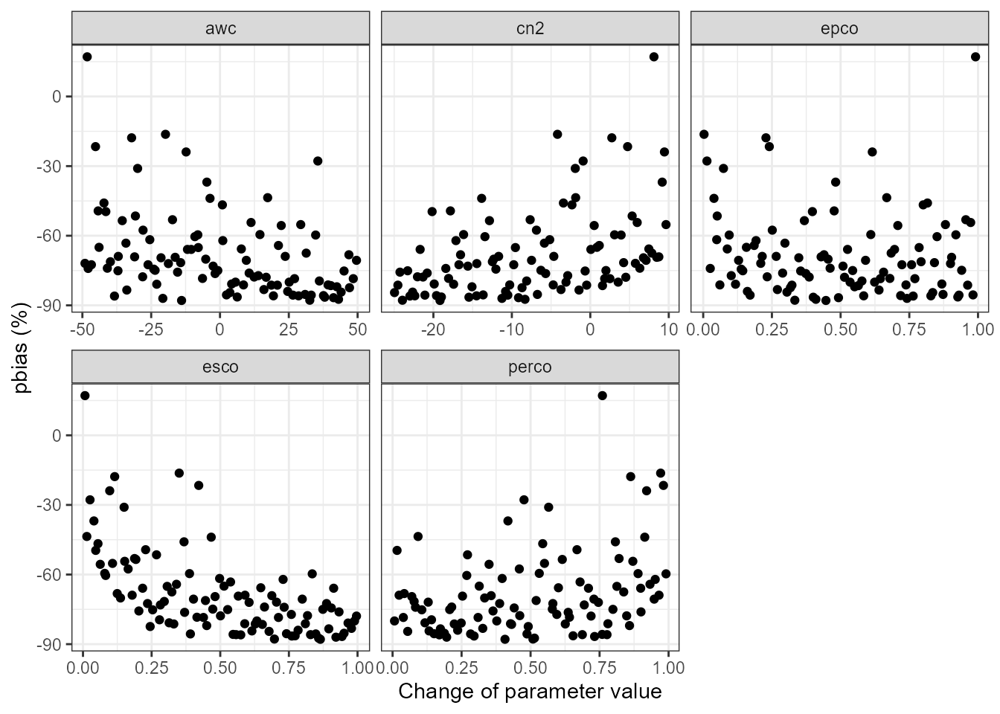
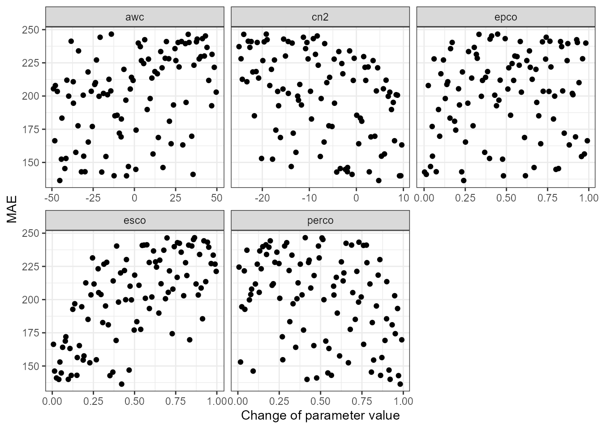
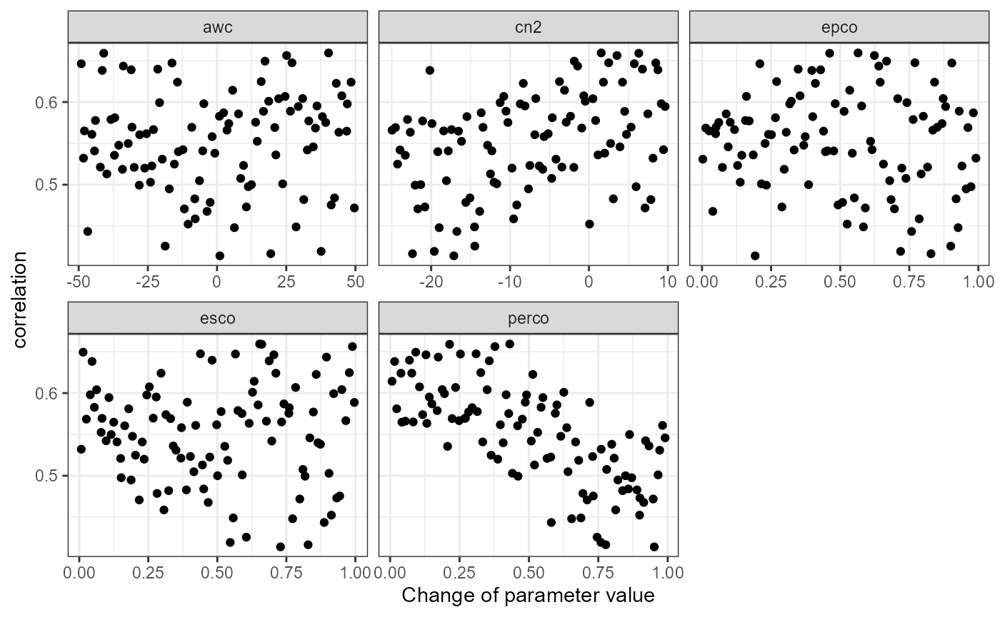

This article is still work in progress. You can use already some parts of it as recipes for your work. The demonstrated example is, however, still not usable for any calibration.
This article should give you a general idea on how you can integrate SWATplusR in typical model calibration routines. There are many ways to approach model calibration, but one of the most frequent ways is to sample a set of parameter combinations, run the model, evaluate the simulation outputs and either perform further simulations or consider the model as acceptably calibrated (well that usually does not happen after one round of simulations). Therefore the article will address the following tasks: - Sampling SWAT parameter combinations using the two approaches, random and Latin Hypercube Sampling (LHS) - Performing model simulations with SWATplusR (using parallel processing to speed things up) - Evaluating model simulations, by using performance criteria which are well established in hydrology
The examples below use different functions from several R packages. I recommend to install and load already all required packages at this point. I do not explain what the purposes of these packages are, but I will refer to some of them in the eamples below.
# If any of the packages is not installed already run the respective lines here.
# General data science packages
install.packages('dplyr')
install.packages('tibble')
install.packages('purrr')
install.packages('lubridate')
# Latin Hypercube sampling
install.packages('lhs')
# Hydrological model performance metrics
install.packages('hydroGOF')Two often used sampling strategies for parameter sampling are to perform a simple generic random sampling, or to use Latin Hypercube Sampling (LHS). You can implement both sampling strategies quite easily in R. To draw random uniform sampling you can simply use the function runif() from the base R package stats (R Core Team, 2019). Different LHS sampling routines are available with the package lhs (Carnell, 2019). Other procedures, such as certain methods for parameter sensitivity analysis require specifically tailored sampling schemes. These are often provided with the R packages that you can use to perform sensitivity analysis.
Before we can draw parameter samples we have to define the parameters that we want to include in the parameter set and the ranges in which each parameter should be changed. The names of the parameters follow a specific syntax that controls the type of parameter change and can include further conditions for a parameter change. The parameter syntax is explained in the Get started section. If you are not familiar with the parameter name syntax already I recommend to have a look there first.
We can define the parameter names and the boundaries for the parameter changes in a tibble (Müller and Wickham, 2019) that we then can further use in different sampling strategies. I recommend to use a tibble here rather than the synonymous data.frame as the base R data frames may have issues with more complex column names that we require here. The tibble for the parameter boundaries is structured as illustrated in the example below. We define a column name and assign two values which represent the lower and the upper boundaries for possible parameter changes. The example below uses 7 SWAT+ parameters that are often included in model calibration. The first line in the tibble definition can for example be translated as we define the parameter ‘cn2’ which is a ‘.mgt’ parameter and we want to change the initial parameter values by adding or substracting absolute values from a range -15 to 10.
par_bound <- tibble('cn2.hru | change = abschg' = c(-15, 10),
'lat_ttime.hru | change = absval' = c(0.5, 50),
'lat_len.hru | change = absval' = c(10, 100),
'k.sol | change = pctchg' = c(-50, 50),
'awc.sol | change = pctchg' = c(-50, 50),
'esco.hru | change = absval' = c(0, 1),
'epco.hru | change = absval' = c(0, 1))runif()
The most basic way to draw random parameter samples is to use the base R function runif(). With runif() you can create a uniformly distributed vector. To draw a specific number of parameter sets with runif() you have to create a vector with that number of random values for each parameter and transform them to their parameter ranges. Below you find a simple approach to create a table of parameter combinations using a map*() function from the functional programming package purrr. Even if you do not fully understand what the map_df() and the code below does you can use this as a recipe for drawing random uniform samples. This approach should work in your practical cases as well.
n_sample <- 250
par_runif <- map_df(par_bound, ~ runif(n_sample, .x[1], .x[2]))
par_runif
#> # A tibble: 250 x 7
#> `cn2.hru | change ~ `lat_ttime.hru | ch~ `lat_len.hru | ch~ `k.sol | change ~
#> <dbl> <dbl> <dbl> <dbl>
#> 1 7.30 32.9 52.1 -49.6
#> 2 -12.6 20.1 52.0 28.5
#> 3 -9.43 46.2 96.0 30.3
#> 4 -2.93 20.6 12.3 45.8
#> 5 8.51 10.0 20.5 -20.8
#> 6 -6.99 28.4 35.9 -7.74
#> 7 -3.27 28.0 10.2 12.0
#> 8 -2.00 3.00 36.3 17.4
#> 9 -14.9 40.6 20.1 -18.5
#> 10 -11.6 46.4 39.6 1.30
#> # ... with 240 more rows, and 3 more variables:
#> # awc.sol | change = pctchg <dbl>, esco.hru | change = absval <dbl>,
#> # epco.hru | change = absval <dbl>randomLHS()
In a very similar way as the random sampling you can draw LHS samples by using the function randomLHS() from the lhs package. This is my preferred way to sample parameter combinations, as the parameter combinations are better distributed over the parameter space compared to random sampling. Again we can use the defined parameter boundaries to define the LHS parameter set. Again, the code below can be considered as a recipe to perform a sampling that you can simply use in other modeling cases as well.
n_sample <- 250
n_par <- ncol(par_bound)
par_lhs <- randomLHS(n = n_sample, k = n_par) %>% # Perform sampling
as_tibble(., .name_repair = 'minimal') %>% # Convert to a tibble
set_names(names(par_bound)) %>% # Assign the parameter names with purrr
map2_df(., par_bound, ~ (.x * (.y[2] - .y[1]) + .y[1])) # Scale parameter ranges
par_lhs
#> # A tibble: 250 x 7
#> `cn2.hru | change ~ `lat_ttime.hru | ch~ `lat_len.hru | ch~ `k.sol | change ~
#> <dbl> <dbl> <dbl> <dbl>
#> 1 -10.1 47.0 40.9 -5.56
#> 2 -5.89 17.7 77.3 26.1
#> 3 9.49 40.3 30.5 -9.59
#> 4 4.83 6.02 85.2 34.5
#> 5 5.34 40.5 26.8 28.8
#> 6 8.21 9.73 89.8 32.6
#> 7 6.28 8.48 95.7 -21.1
#> 8 6.38 2.03 41.6 5.09
#> 9 1.48 4.72 63.9 12.5
#> 10 -13.5 3.44 29.7 -10.2
#> # ... with 240 more rows, and 3 more variables:
#> # awc.sol | change = pctchg <dbl>, esco.hru | change = absval <dbl>,
#> # epco.hru | change = absval <dbl>There are endless ways to approach a SWAT model calibration. Below I demonstrate a small workflow that could give some ideas on what to consider in a model calibration. The example shows a bare minimum example for calibrating discharge. Real case studies will very likely require more extensive calibration and evaluation depending of the scopes of a model setup. In SWAT model applications other variables such as the in-stream sediment load, or nutrient loads are the variables of interest. This is not covered in this small example.
A few catchment properties that we will use later on in the example I will define already at this point.
#Catchment area
cmt_area <- 22261500 #m2
#et_avann <- ####This does not really involve R or SWATplusR at this point in the model development. But the value of this step is undeniably high. Before starting with any model calibration run your initial model setup (for example in the SWAT+Editor) and check your aggregated and general model results with SWATcheck for example which is implemented in the SWAT+Editor. This gives you a good idea if your model inputs, such as the mean annual precipitation and temperature are plausible. Is the potential evapotranspiration plausible? At this point the model should already include the farm management that you want to implement in the model simulations. Do the plan biomass and the crop yields look plausible? Are crop yields in your region (e.g. from agricultural statistics) comparable to the simulated crop yields? Make sure to check these rough boundary conditions and solve any issues at this stage of model development. Any model calibration with wrong inputs or implausible configurations is a waste of time and going back to this step and fixing things is very likely inevitable.
In a first calibration step I recommend to get a rough idea of the fractions of the water input (i.e. precipitation) wich are removed from the system by evapotranspiration and that end up at the main outlet of the catchment (or a subcatchment where observed data is available). The separation of the input water into these two general fractions is mostly controlled by a few SWAT parameters, which are ‘esco’, ‘epco’, ‘cn2’, ‘awc’, and ‘perco’. Thus, I would include only these few parameters in a first step to get an idea how changes in these parameters control the simulation of annual evapotranspiration sums. These parameters are of course again included in further calibration steps, but there is a chance to constrain their parameterer ranges already and remove areas in the parameter space that would result in implausible model simulations. This conceptual idea is somehow related to the soft calibration that is available in SWAT+, but the overall approach is different.
Let us define the parameter boundaries for the parameters ‘esco’, ‘epco’, ‘cn2’, ‘awc’, and ‘perco’. Unless there is no experience with plausible parameter ranges I would start with very wide ranges in which to vary the parameter values.
par_bound <- tibble('esco.hru | change = absval' = c(0, 1),
'epco.hru | change = absval' = c(0, 1),
'cn2.hru | change = abschg' = c(-25, 10),
'awc.sol | change = pctchg' = c(-50, 50),
'perco.hru | change = absval' = c(0, 1))Using the recipe from above we draw an LHS sample with 100 parameter combinations. The number here can be lower or higher. I would base that decision on the run time of your model setup and how many simulations you can afford. If the number is too low it may be difficult to see any clear patterns.
n_sample <- 100
n_par <- ncol(par_bound)
par_et <- randomLHS(n = n_sample, k = n_par) %>% # Perform sampling
as_tibble(., .name_repair = 'minimal') %>% # Convert to a tibble
set_names(names(par_bound)) %>% # Assign the parameter names with purrr
map2_df(., par_bound, ~ (.x * (.y[2] - .y[1]) + .y[1])) # Scale parameter ranges
par_et
#> # A tibble: 100 x 5
#> `esco.hru | change~ `epco.hru | change~ `cn2.hru | change~ `awc.sol | change~
#> <dbl> <dbl> <dbl> <dbl>
#> 1 0.968 0.696 -8.07 24.8
#> 2 0.923 0.809 -16.3 46.1
#> 3 0.160 0.823 -3.96 -16.1
#> 4 0.102 0.231 -7.62 -12.0
#> 5 0.523 0.346 5.53 21.6
#> 6 0.845 0.372 -15.5 39.5
#> 7 0.232 0.882 -5.58 38.2
#> 8 0.684 0.985 -8.27 -29.3
#> 9 0.446 0.480 8.82 -1.17
#> 10 0.222 0.141 -12.5 27.2
#> # ... with 90 more rows, and 1 more variable: perco.hru | change = absval <dbl>We will again use the SWAT+ demo model setup that is available from SWATdata. With load_demo() we can again save the project in the defined path on the hard drive and return the full path (demo_path) in R.
demo_path <- load_demo(dataset = 'project',
path = 'Define:/your/path',
version = 'plus')Using the defined parameter set par_et we will perform the 100 SWAT+ simulations and extract the output variables ‘flo_out’ at the catchment outlet and the average basin evapotranspiration ‘et’ which will be named qout and et, respectively. We will perform the simulations in the time frame start_date = 20000101 to end_date = 20121231 and evaluate the simulations starting from start_date_print = 20030101 which is equivalent to setting years_skip = 3.
To speed up the simulation run time we employ parallel processing simply by setting n_thread to a number larger than 1 to use this number of cores for the execution of the SWAT simulations.
A short sidenote here, I strongly recommend to always set the output_interval = 'daily' which is the default setting in run_swatplus(). A reason for that is that the the simulations are performed with daily time intervals anyways and returning daily outputs do not affect the simulation run time. This gives you the full information of your simulation results, that you can aggregate to other time intervals at any point in your analysis (which I will also show below). This gives you full control over the aggregation and you do not have to rely on what temporal aggregation was performed internally when running SWAT+. An example for that is shown when you run SWAT+ return e.g. monthly time intervals and compare the output files ‘channel_sd_mon.tzt’ and ‘channel_sdmorph_mon.txt’ and realize that the aggregations for the same variables are different, while the results are equal for daily outputs.
qout_et <- run_swatplus(project_path = demo_path,
output = list(q_out = define_output(file = 'channel_sd',
variable = 'flo_out',
unit = 1),
et = define_output(file = 'basin_wb',
variable = 'et',
unit = 1)),
parameter = par_et,
start_date = 20000101,
end_date = 20121231,
start_date_print = 20030101,
n_thread = 4)
#> Building 4 threads in 'Define:/your/path/swatplus_rev60_demo/.model_run':
#> Completed 4 threads in 0S
#> Performing 100 simulations on 4 cores:
#> Completed 100 simulations in 5M 1S Although we returned the simulation results with daily time intervals we want to analyze them on a yearly and average annual basis. Below you find again a recipe to perform the aggregation. The first aggregation is to calculate annual sums. In the second aggregation the average annual value of the sums is calculated. If you require other aggregations, e.g. monthly sums, or mean values you can adapt the concept below to your needs. Additionally to the aggregation we also converted the discharge values to specific runoffs. This step helps to better compare the values to precipitation and evapotranspiration sums.
qout_annual <- qout_et$simulation$q_out %>%
mutate(year = year(date)) %>%
group_by(year) %>%
summarise(across(starts_with('run_'), ~ sum(.x*24*3600 * 1e3 / cmt_area)))
qout_avann <- qout_annual %>%
summarise(across(starts_with('run_'), .fns = mean))For the evaluation of the simulated values we use the observed discharge time series that is available from the demo data in SWATdata. For the comparison we perform the same temporal aggregation above and limit the observed time series to the same time frame as the simulated one.
qobs <- load_demo(dataset = 'obs')
qobs_annual <- qobs %>%
mutate(year = year(date)) %>%
group_by(year) %>%
summarise(qobs_mm = sum(discharge*24*3600 * 1e3 / cmt_area)) %>%
left_join(qout_annual['year'], ., by = 'year')
qobs_avann <- qobs_annual %>%
summarise(qobs_mm = mean(qobs_mm))Dotty plots are a very simple and effective way to evaluate parameter ranges with respect to any model performance criterium. Below I defined a function to do dotty plots. We will use this function in the following for model evaluation. It is formulated in a very general way. Thus you can use it in any other model evaluations as well as long as the par is a data.frame or tibble with the parameter values and the crit is a vector with the results of you model evaluation with any performance criterium. This vector must have the same length as the number of lines of hte parameter table.
plot_dotty <- function(par, crit, crit_label = 'crit', n_col = 3) {
dotty_tbl <- par %>%
mutate(crit = crit) %>%
pivot_longer(., cols = -crit, names_to = 'parameter')
ggplot(data = dotty_tbl) +
geom_point(aes(x = value, y = crit)) +
facet_wrap(. ~ parameter, ncol = 3, scales = "free_x") +
labs(x = 'Change of parameter value', y = crit_label) +
theme_bw()
}A first simple analysis is to just compare the simulated and the observed mean annual runoff sums. For the comparison we simply calculate the difference between simulated and observed value. The advantage of this simple criterion is that it gives a good idea on the sign and the amplitude of the difference between simulations and observations.
diff_q <- map_dbl(qout_avann, ~ .x - qobs_avann$qobs_mm)
plot_dotty(qout_et$parameter$values, diff_q, 'Difference')
A similar picture would be given when we analyze the pbias of e.g. the annual runoff sums. The pbias metric is available from hydroGOF with the function pbias().
pb_q <- qout_annual %>%
select(-year) %>%
map_dbl(., ~ pbias(.x, qobs_annual$qobs_mm))
plot_dotty(qout_et$parameter$values, pb_q, 'pbias (%)')
In a second step we can check how well the inter-annual differences are reflected by the performed simulation runs. Again we try to use very simple performance criteria in this evaluation step. To compare the differences in amplitude we use the mean absolute error measure. The mean absolute error is implemented in the package hydroGOF (Mauricio Zambrano-Bigiarini, 2017) with the function mae(). To compare the inter-annual pattern we use the correlation between simulations and observations.
mae_q <- qout_annual %>%
select(-year) %>%
map_dbl(., ~ mae(.x, qobs_annual$qobs_mm))
plot_dotty(qout_et$parameter$values, mae_q, 'MAE')
cor_q <- qout_annual %>%
select(-year) %>%
map_dbl(., ~ cor(.x, qobs_annual$qobs_mm))
plot_dotty(qout_et$parameter$values, cor_q, 'correlation')